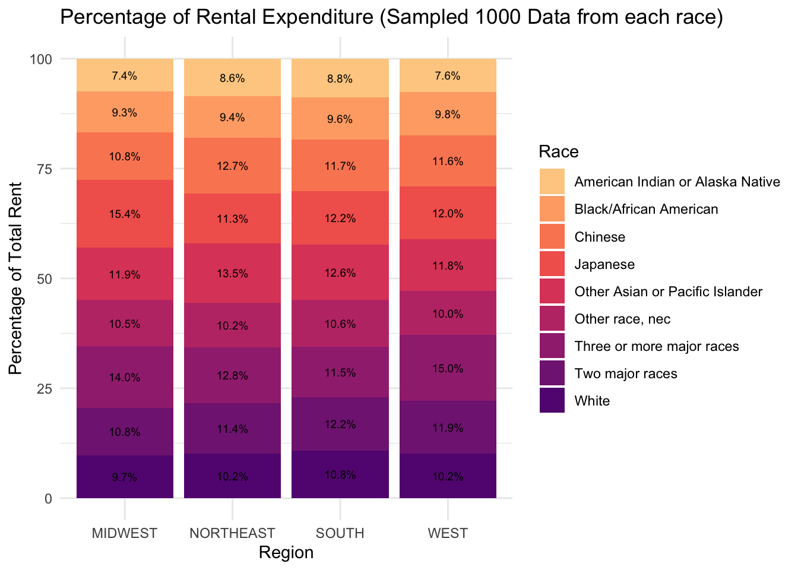

| term | estimate | std.error | statistic | p.value |
|---|---|---|---|---|
| (Intercept) | 1329.7165501 | 15.8008996 | 84.15448 | 0 |
| INCTOT | 0.0057046 | 0.0002248 | 25.38011 | 0 |
Analysis
Here we provide a detailed analysis using more sophisticated statistics techniques.
Research Question and Motivation
Motivation
The primary focus of this research is to investigate the relationship between individual income levels and rental expenditures. This analysis is motivated by the need to understand the financial burdens of rent relative to income and how this impacts different demographic groups over time.
Objectives
- Relationship Exploration: We aim to determine how changes in income levels affect rental spending. This includes examining whether the relationship is strictly linear or if there are nonlinear dynamics that better capture the fluctuations in rental expenditures as income varies.
- Quantitative Analysis: Our goal is to quantify the relationship precisely. For example, we seek to estimate the increase in rental expenditure for every thousand-dollar increase in income or the percentage change of rent expenditure for every one percent increase in income.
- Demographic Variance: The study will also consider racial differences to identify how income’s impact on rent varies among different racial groups.
- Temporal Analysis: Employing a time series regression model allows us to account for changes over time, providing a dynamic perspective on the income-rent relationship.
Key Questions
- What is the quantitative impact of income changes on rental expenditures?
- How does the relationship between income and rent vary across different racial groups?
- Does the relationship between income and rent change over time?
Models and Inferences (First dataset)
Outline
- Simple Linear Regression Model (Detailed in Class Blog 4)
- Multiple Linear Regression Model (Detailed in Class Blog 4)
- Log-Log Regression Model
- Log-Log Regression Model with interaction terms
1. Simple Linear Regression Model
Model Overview:
This model investigates the relationship between income (the predictor) and rent (the response), offering preliminary insights into whether they share a positive or negative correlation and assessing if it is worth to have further detailed analysis.
Model Findings:
- The model suggests that an increase of $1,000 in income is associated with an average increase of approximately 5.7 dollars in the rent variable.
Statistical Performance:
| r.squared | adj.r.squared | sigma | statistic | p.value | df | logLik | AIC | BIC | deviance | df.residual | nobs |
|---|---|---|---|---|---|---|---|---|---|---|---|
| 0.1108854 | 0.1107132 | 884.7833 | 644.1498 | 0 | 1 | -42390.52 | 84787.04 | 84806.69 | 4043376235 | 5165 | 5167 |
The model’s R-squared and adjusted R-squared values are modest but acceptable for simple linear regression, justifying further exploration.
A significant F-statistic and p_value confirm the model’s statistical relevance, despite a high sigma pointing to considerable unexplained variance.
Model Discussion:
- The model offers an initial look at the income-rent relationship but is incomplete.
- Future analysis should incorporate more factors for greater accuracy.
2. Multiple Linear Regression Model
Model Overview:
- This model enhances the simple linear regression by incorporating additional confounding variables to refine our analysis.
- This expanded model builds upon the initial simple linear regression framework.
Model Findings:
- A $1,000 increase in total income (INCTOT) is associated with an average increase of 5.2 in gross rent (RENTGRS), assuming other variables are constant.
Statistical Performance:
| r.squared | adj.r.squared | sigma | statistic | p.value | df | logLik | AIC | BIC | deviance | df.residual | nobs |
|---|---|---|---|---|---|---|---|---|---|---|---|
| 0.2317473 | 0.2284616 | 824.1282 | 70.53243 | 0 | 22 | -42013.05 | 84074.11 | 84231.31 | 3493739342 | 5144 | 5167 |
- The R-squared value of 0.28 indicates that approximately 28% of the variance in the dependent variable (gross rent) is explained by the model, which is a considerable improvement compared to the simple linear regression.
- The adjusted R-squared value of 0.2807292 closely mirrors the R-squared value, suggesting that the additional predictors are effectively contributing valuable information.
- A F-statistic value of 98.57 and a p-value of 0 confirm the statistical significance of the model, suggesting that the regression results are highly unlikely to occur by chance.
Variable Selection and model refinement:
- A correlation matrix was used to identify control variables and to detect potential multi-collinearity issues.
| INCTOT | ROOMS | NFAMS | AGE | FTOTINC | RENTGRS | |
|---|---|---|---|---|---|---|
| INCTOT | 1.0000000 | -0.0149409 | -0.0313099 | -0.0077964 | 0.7282638 | 0.3329946 |
| ROOMS | -0.0149409 | 1.0000000 | 0.1631221 | -0.0439707 | 0.1083906 | 0.1406264 |
| NFAMS | -0.0313099 | 0.1631221 | 1.0000000 | -0.1405046 | -0.0924716 | 0.0881204 |
| AGE | -0.0077964 | -0.0439707 | -0.1405046 | 1.0000000 | -0.0768613 | -0.0870537 |
| FTOTINC | 0.7282638 | 0.1083906 | -0.0924716 | -0.0768613 | 1.0000000 | 0.4448424 |
| RENTGRS | 0.3329946 | 0.1406264 | 0.0881204 | -0.0870537 | 0.4448424 | 1.0000000 |
- A review of multicollinearity prompted the removal of
FTOTINCto prevent model overfitting.
| GVIF | Df | GVIF^(1/(2*Df)) | |
|---|---|---|---|
| INCTOT | 2.317240 | 1 | 1.522248 |
| KITCHEN | 1.023481 | 1 | 1.011673 |
| ROOMS | 1.108739 | 1 | 1.052967 |
| NFAMS | 1.111046 | 1 | 1.054062 |
| AGE | 2.074406 | 1 | 1.440280 |
| MARST | 1.856902 | 5 | 1.063846 |
| RACE | 1.198063 | 8 | 1.011358 |
| EMPSTAT | 1.576945 | 2 | 1.120609 |
| FTOTINC | 2.385884 | 1 | 1.544631 |
| REGION_CLASSIFIED | 1.130442 | 3 | 1.020645 |
- The selection and validation of control variables were systematically conducted.
- After fitting the multiple linear regression (MLR) model,
Kitchenwas removed due to its statistical insignificance, indicated by a high p-value. Employment Status, although not as critical, also showed a non-significant p-value and is suspected to interact with variables likeIncomeorFTOTINC. This interaction will be explored further.
Model Discussion :

- The pattern in this plot suggests potential non-linear relationships and heteroscedasticity as the systematic pattern seen here where residuals create a fan-shaped spread.
- There are some points that stand out from the cloud of points, especially on the bottom left and the top right of the plot. These could be potential outliers or leverage points.
- Given the apparent increase in variability of residuals with the size of the fitted values and the non-linear pattern, applying a log transformation to the variable might help.
3. Log-Log Regression Model
Model Overview:
- Predictor and response variables underwent log transformation to correct for right skewness, as elaborated on the data page and the discussion in last section.
- A reanalysis was conducted post data cleansing to assess the impact of log-transformed variables.
Model Findings:
- The model suggests that a 10% increase in income is predicted to raise rent by an average of 13.34%, with all other variables held constant, indicating income’s elasticity effect on rent.
Statistical Performance:
| r.squared | adj.r.squared | sigma | statistic | p.value | df | logLik | AIC | BIC | deviance | df.residual | nobs |
|---|---|---|---|---|---|---|---|---|---|---|---|
| 0.2267776 | 0.2234707 | 0.5072099 | 68.5763 | 0 | 22 | -3812.614 | 7673.227 | 7830.428 | 1323.355 | 5144 | 5167 |
- An adjusted R-squared value of 0.223, while modest, is considered adequate within the complex realms of social science and economics.
- A very low p-value signifies the statistical significance of the model’s predictors.
- The sigma value’s reduction points to a more precise model, albeit comparisons with non-logarithmic models are not straightforward due to scale differences.
Model Discussion:
- Linearity and Homoscedasticity:
- The absence of a systematic pattern in the residuals indicates a proper capture of the relationship between the predictors and response variable in the log-transformed model.
- The spread of residuals is mostly consistent, though some widening at the extremes suggests minor heteroscedasticity. This is often a minor issue in economic data, reflecting the variability in higher income or rent brackets, and doesn’t significantly affect the model’s overall validity.
- Residuals predominantly centering around the zero line signify no model bias, reinforcing the model’s accuracy.
- A small number of potential outliers deviate from the main cluster, which is typical in large economic datasets and generally does not markedly impact the robust central trend captured by the model.
- Normality of Residuals:

- The bulk of residuals align with the normality line on the Q-Q plot, with slight deviations at both ends.
- These deviations, often seen in economic data due to outliers, do not substantially affect the model’s predictive capability.
- IID Errors:
| Statistic | p_Value |
|---|---|
| 1.977496 | 0.2092356 |
- For Durbin-Watson Statistic, the result statistic value close to 2 indicates no autocorrelation, implying that the errors are independent. And for a random scatter of residuals, without visible trends or cycles, supports the assumption of IID errors.
- Multicollinearity:
| GVIF | Df | GVIF^(1/(2*Df)) | |
|---|---|---|---|
| log_INCTOT | 1.298351 | 1 | 1.139452 |
| ROOMS | 1.069938 | 1 | 1.034378 |
| NFAMS | 1.088234 | 1 | 1.043185 |
| AGE | 2.109694 | 1 | 1.452479 |
| MARST | 1.790805 | 5 | 1.059997 |
| RACE | 1.193223 | 8 | 1.011102 |
| EMPSTAT | 1.844666 | 2 | 1.165412 |
| REGION_CLASSIFIED | 1.119686 | 3 | 1.019020 |
- The adjusted GVIF values, being all near or below the threshold of 1.5 after taking the root, demonstrate that the multicollinearity is likely not distorting the estimates in the regression model significantly. This implies that each predictor variable is providing unique information that is not overly redundant with other variables in the model.
Upon reviewing these diagnostic measures, the model is deemed well-fitted, and the derived conclusions are robust and reliable.
4. Log-Log Regression Model by Race
Model Overview
- This analysis applies a stratified Log-Log regression approach, segregating data by race as detailed in Class Blog 6. It builds upon the strong foundational understanding from Section 3.
Model Findings:
| RACE | log_INCTOT_Coefficient |
|---|---|
| American Indian or Alaska Native | 0.0937685 |
| Black/African American | 0.0621126 |
| Chinese | 0.1915177 |
| Other Asian or Pacific Islander | 0.1050231 |
| Other race, nec | 0.0376731 |
| Three or more major races | 0.1048730 |
| Two major races | 0.0882288 |
| White | 0.1676538 |
The coefficient for log_INCTOT shows notable variation across racial categories, which indicates the impact of income on rent varies by race.
The Chinese group demonstrates the highest log_INCTOT coefficient, indicating a particularly strong positive association between income and rent within this demographic.
American Indian or Alaska Native, Other Asian or Pacific Islander, Other race, nec, Three or more major races, and White categories show a range of coefficients, suggesting varied levels of positive association.
Black/African American and Two major races groups present with lower coefficients, hinting at a relatively weaker positive relationship.
Statistical Performance:
| RACE | term | estimate | p.value |
|---|---|---|---|
| American Indian or Alaska Native | log_INCTOT | 0.0937685 | 0.3138472 |
| Black/African American | log_INCTOT | 0.0621126 | 0.0012082 |
| Chinese | log_INCTOT | 0.1915177 | 0.0428004 |
| Other Asian or Pacific Islander | log_INCTOT | 0.1050231 | 0.0001647 |
| Other race, nec | log_INCTOT | 0.0376731 | 0.1041104 |
| Three or more major races | log_INCTOT | 0.1048730 | 0.1615109 |
| Two major races | log_INCTOT | 0.0882288 | 0.0000441 |
| White | log_INCTOT | 0.1676538 | 0.0000000 |
For most racial groups, the p-values indicate statistical significance (p < 0.05), especially pronounced for
Black/African American,Chinese,Other Asian or Pacific Islander, andWhite categories, implying a strong relationship between income and rent.The higher p-value for
American Indian or Alaska Nativesuggests that the relationship between income and rent is not statistically significant for this group, based on the traditional alpha threshold.
Model Discussion:
The evident variability in log_INCTOT coefficients across races suggests that the relationship between income and rent is influenced by racial factors, pointing towards the complexity inherent in socio-economic dynamics.
Non-significance in certain racial categories may reflect data limitations or the presence of other variables not captured in the model, indicating areas where further research or data collection could be beneficial.
The model’s overall robustness and the significance of its findings provide valuable insights, yet also suggest that an exploration of additional socio-economic factors and historical trends could contribute to a more nuanced understanding.
5. Enhanced Log-Log Regression Model with Interaction Terms
Model Overview
- This model is built upon the solid foundation established in Section 3. This section explores nonlinearity further and addresses the potential skewness identified in the conclusions of Model 3.
Model Overview and Model Refinement:
The interaction term
EMPSTAT * FTOTINChas been introduced to investigate the suspected interaction effect between employment status and total family income.Post inclusion, the p-value for
EMPSTATUnemployed:FTOTINCis slightly above 0.05, suggesting it has borderline statistical significance. Therefore, adding interaction term needs to have further consideration.
Statistical Performance:
| r.squared | adj.r.squared | sigma | statistic | p.value | df | logLik | AIC | BIC | deviance | df.residual | nobs |
|---|---|---|---|---|---|---|---|---|---|---|---|
| 0.2727009 | 0.2691641 | 0.4920608 | 77.10474 | 0 | 25 | -3654.429 | 7362.857 | 7539.709 | 1244.758 | 5141 | 5167 |
All predictors show statistical significance, with the exception of certain categories within marital status and employment status, indicating robustness in the variable selection.
The integration of the interaction term retains the significance of other variables, with no detrimental impact on the model’s variables as reflected in their p-values.
Model Discussion:
- The residual plot indicates that the model without interaction terms performs better than the log-log regression with interaction terms. This residual plot does not show the performance as well as the section 3.

Therefore, although this model’s conclusions offer an extension to our understanding of the economic factors influencing rent prices in section 3, we still take the log_log model for further analysis.
Models and Inferences (Merged dataset)
Outline
- Log-Log Regression Model by YEAR
- Longitudinal Log-Log Regression Model by Race
- Time series model
1. Log-Log Regression Model by YEAR
Model Overview:
- This analysis implements the validated Log-Log regression approach on annual data segments to assess temporal trends and variations.
Model Findings:

- Observations show peaks in coefficient estimates, notably after 2000 and before 2020, with subsequent troughs suggesting potential corrective periods.
- The coefficient shows dropping down during the Covid-19 period.
- The coefficient trend exhibits cyclicity with no monotonic progression, featuring multiple peaks and valleys, implying a potential cyclical influence on the income-rent relationship.
- Coefficient estimates range within a tight interval, indicating a consistent strength of relationship across the dataset’s timespan.

- R-squared values demonstrate time-bound variability, implying shifts in the model’s explanatory power from year to year.
- A recent sharp decline in R-squared highlights a potential reduction in predictive accuracy or a substantial data structure change.
Statistical Performance:
[Click here to view the summary table for the model of each Year.] (https://yatingzhu.shinyapps.io/app3/)
- All models are statistically validated, while reviewing each coefficient of each year through ‘tidy’ table, there is a noticeable exception in the MARSTSeparated category for the year 2022 shows to be statistically insiginificant, but others are all good .
- R-squared values exhibit minor fluctuations over time, signifying a stable degree of explained variability in the response variable by the model.
- Adjusted R-squared values, marginally lower than the R-squared, adhere to expectations, considering model complexity relative to data volume.
- P-values indicate consistent statistical significance for the model’s predictors on an annual basis.
- Log-likelihood, AIC, and BIC values increment over time, which may indicate an improving model fit or increasing data variability.
- The trends in model deviance require additional context for clear interpretation, while a gradual decrease in df.residual suggests either an increase in model parameters or variations in data availability over time.
2. Longitudinal Log-Log Regression Model by Race
Model Overview:
- This model extended the 2022 dataset analysis to explore how the rent-income relationship for each racial group has evolved from 2000 to 2022.
- Trends over time for each race were charted to illustrate these dynamics.
- Similar to the 2022 model, the coefficients were found to be statistically significant and the residual plots falling within an acceptable range.
Model Findings:
Click here to view the plot for the cofficients across Years for each race.
- Specific Trends:
Alaska Native: Shows minor fluctuations around zero, with both positive and negative coefficients, indicating inconsistent trends over the years.
American: This category has NA values, suggesting incomplete data, making it hard to discern a clear trend.
Chinese: Generally has higher positive coefficients compared to other groups, particularly noticeable in later years, indicating a strong positive association with income in those years.
Japanese: Has some missing values but otherwise presents mostly positive coefficients, with a notable spike in recent years.
Islander: Also features both positive and negative coefficients with considerable variability.
Other race, nec: Shows a mix of positive, negative, and NA values, making a clear trend difficult to establish.
Two or more races: This group generally has positive coefficients, with a few exceptions, suggesting a fairly consistent positive association with income.
Whites: Present a range of coefficients, mostly positive with some fluctuations, but generally indicate a positive association with income.
- Race Comparisons: Certain racial categories, like those identifying as Chinese and Japanese, tend to have higher coefficients, suggesting a stronger relationship with income than other races in the dataset. Conversely, the ‘Other race, nec’ category often has lower coefficients, implying a weaker association with income.
Statistical Performance:
Click here to view the summary table of each race across Years.
- The p-value of 0 consistently across all races and years suggests that the models are statistically significant. This means the results are unlikely to have occurred by chance, and there is a statistically significant relationship between the dependent and independent variables in the models used.
Discussion of the topic:
- Race is really a point that needs to explore. Through the result and the visualization of the coefficient changes for each race, there is definitely different patterns showed.
3.Time series model
Model Overview:
Model Findings:
log-log model
library(tidyr)
library(broom)
library(dplyr)
library(here)
library(gt)
library(purrr)
data_path <- here("dataset", "data_twenty_clean.csv")
data_path1 <- here("dataset", "latest_clean.csv")
library(readr)
data_twenty <- read_csv(data_path,show_col_types = FALSE)
data_2022 <- read_csv(data_path1,show_col_types = FALSE)
library(ggplot2)
library(knitr)
library(lme4)
library(broom.mixed)
library(nlme)
Attaching package: 'nlme'The following object is masked from 'package:lme4':
lmListThe following object is masked from 'package:dplyr':
collapselibrary(car)Regression Coefficients Table:
| effect | group | term | estimate | std.error | statistic |
|---|---|---|---|---|---|
| fixed | NA | (Intercept) | 4.6473187 | 0.0722683 | 64.3064496 |
| fixed | NA | log_INCTOT | 0.1466717 | 0.0017573 | 83.4655767 |
| fixed | NA | ROOMS | 0.0662534 | 0.0008691 | 76.2356703 |
| fixed | NA | NFAMS | 0.0876972 | 0.0024604 | 35.6427658 |
| fixed | NA | MARSTMarried, spouse absent | 0.1084348 | 0.0107642 | 10.0736180 |
| fixed | NA | MARSTMarried, spouse present | 0.1940211 | 0.0049332 | 39.3300138 |
| fixed | NA | MARSTNever married/single | 0.1507032 | 0.0048136 | 31.3079709 |
| fixed | NA | MARSTSeparated | 0.0140153 | 0.0089928 | 1.5585015 |
| fixed | NA | MARSTWidowed | 0.0171637 | 0.0076327 | 2.2486938 |
| fixed | NA | RACEBlack/African American | 0.2025752 | 0.0157059 | 12.8979976 |
| fixed | NA | RACEChinese | 0.3392542 | 0.0210242 | 16.1363309 |
| fixed | NA | RACEJapanese | 0.4122124 | 0.0330440 | 12.4746375 |
| fixed | NA | RACEOther Asian or Pacific Islander | 0.4046109 | 0.0169256 | 23.9051903 |
| fixed | NA | RACEOther race, nec | 0.2698439 | 0.0163122 | 16.5425061 |
| fixed | NA | RACEThree or more major races | 0.3714474 | 0.0294801 | 12.5999178 |
| fixed | NA | RACETwo major races | 0.3498633 | 0.0171818 | 20.3624349 |
| fixed | NA | RACEWhite | 0.2300570 | 0.0152785 | 15.0576130 |
| fixed | NA | EMPSTATNot in labour force | -0.0888542 | 0.0042660 | -20.8284874 |
| fixed | NA | EMPSTATUnemployed | 0.0050312 | 0.0075894 | 0.6629276 |
| ran_pars | REGION_CLASSIFIED | sd__(Intercept) | 0.1360942 | NA | NA |
| ran_pars | Residual | sd__Observation | 0.4839304 | NA | NA |
- The model suggests that a 10% increase in income is predicted to raise rent by an average of 14.66%, with all other variables held constant, indicating income’s elasticity effect on rent.
Statistical performance:
| nobs | sigma | logLik | AIC | BIC | deviance | df.residual |
|---|---|---|---|---|---|---|
| 94520 | 0.4839304 | -65529.1 | 131100.2 | 131298.8 | 131058.2 | 94499 |
- There are 94520 observations in the table, which generally is a large number which is good.
- Residual Standard Error (sigma): The residual standard error is 0.4839304, This value indicates there are deviation of the observed values from the fitted values. A lower residual standard error suggests a model with a good fit to the data.
- Overall statistics suggests there are limitations to the model, but it generally captures the overall trend which further suggests in the residual plot and qq plot.
Model discussion
Residual plot
- The residual plot seems to have certain problem with heteroscedasticity, which is pretty normal in our model since we encountered similar problem in blog post 4. However, this is common in non-transformed data and it is our one of the limitation in our model.
- This log-transformed model seems to perform better in terms of having residuals more consistently distributed around zero. This suggests that the log transformation helped to stabilize the variance of the residuals and improve the model’s homoscedasticity.
QQ plot

[1] 2873 24699- The Q-Q plot we got for model residuals suggests similar issues with our residual plot, however, this is common and again one of our limitation of our model.
- The Q-Q plot captures the overall trend and relevant factors, despite the presence of certain outliers.
- The residuals at the lower and upper ends of the distribution deviate from the line, which indicates that the distribution of residuals has heavier tails than the normal distribution. This means there are more extreme values (outliers) than you would expect if the residuals were perfectly normally distributed.